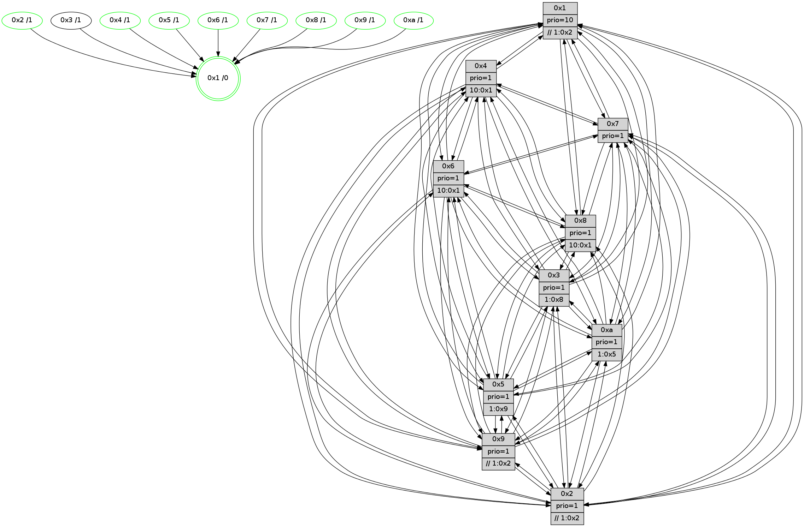

>> << IDX [start] -100 -25 -5 +0 +5 +25 +100 [775.161357164]
 Previous packets
----------------------------------------------------------------------
770.432573 beacon01(faad) #0 coord=01,02,03,04,05,06,07,0a,09,08 cycle=688.0ms assoc
-- color-indic=1 64 4e 04
770.442556 beacon02(faad) #0 coord=01,02,03,04,05,06,07,0a,09,08 cycle=688.0ms assoc 64 dd 35
770.452556 beacon03(faad) #0 coord=01,02,03,04,05,06,07,0a,09,08 cycle=688.0ms assoc 64 a7 78
770.462556 beacon04(faad) #0 coord=01,02,03,04,05,06,07,0a,09,08 cycle=688.0ms assoc 64 d0 92
770.472555 beacon05(faad) #0 coord=01,02,03,04,05,06,07,0a,09,08 cycle=688.0ms assoc 64 aa df
770.482556 beacon06(faad) #0 coord=01,02,03,04,05,06,07,0a,09,08 cycle=688.0ms assoc 64 24 08
770.492557 beacon07(faad) #0 coord=01,02,03,04,05,06,07,0a,09,08 cycle=688.0ms assoc 64 5e 45
770.502561 beacon0a(faad) #0 coord=01,02,03,04,05,06,07,0a,09,08 cycle=688.0ms assoc 64 2f 4e
770.512562 beacon09(faad) #0 coord=01,02,03,04,05,06,07,0a,09,08 cycle=688.0ms assoc 64 a1 99
770.522561 beacon08(faad) #0 coord=01,02,03,04,05,06,07,0a,09,08 cycle=688.0ms assoc 64 db d4
770.535468 [STC(2)->1 #0.80 tree-change,inconsistent-stability,stable,to-color d=1]
770.537418 [TreeStatus(3)-.->1 #0.80 tree-change,inconsistent-stability,stable child=1]
770.538610 [Hello(8): seq=437 sym=5,2,3,4,7,6,9,1 sysInfo=hasWarning stat=5:3,1,14,9/2:12,10,3,2/3:1,13,10,9/4:2,14,11,6/7:1,10,13,7/6:2,1,9,8/9:6,1,12,6/1:8,10,1,0]
770.540968 [Hello(9): seq=437 sym=2,5,3,4,7,6,8,10,1 sysInfo=hasWarning stat=2:13,4,2,0/5:12,0,4,1/3:14,4,6,8/4:15,12,7,5/7:2,15,15,5/6:2,6,10,6/8:10,14,1,0/10:4,10,1,0/1:15,6,4,1]
770.544038 [Hello(4): seq=493 sym=5,7,6,2,3,9,8,10,1 sysInfo= stat=5:14,8,9,8/7:12,0,13,3/6:9,14,12,8/2:14,9,6,8/3:12,5,5,5/9:12,1,10,3/8:1,5,11,8/10:8,3,14,7/1:0,8,4,1]
770.547763 [STC(9)->1 #0.80 tree-change,inconsistent-stability,stable,to-color d=1]
770.550328 [Hello(10): seq=426 sym=6,2,3,8,9,5,7,4,1 sysInfo=hasWarning stat=6:11,0,13,3/2:5,12,4,2/3:11,13,2,5/8:5,4,8,7/9:0,2,5,5/5:7,15,10,10/7:6,13,11,3/4:11,1,3,6/1:5,12,3,1]
770.553142 [STC(10)->1 #0.80 tree-change,inconsistent-stability,stable,to-color d=1]
770.554905 [STC(6)->1 #0.80 tree-change,inconsistent-stability,stable,to-color d=1]
770.556707 [TreeStatus(10)-.->1 #0.80 tree-change,inconsistent-stability,stable child=1]
770.557919 [Hello(7): seq=493 sym=2,3,5,6,4,8,9,10,1 sysInfo=hasWarning stat=2:5,6,2,10/3:3,14,15,9/5:4,6,0,13/6:13,6,15,3/4:10,10,11,0/8:11,1,0,5/9:10,14,14,9/10:2,15,0,8/1:11,5,4,0]
770.561550 [Color(10) seq=125 @0:0 prio=1 >10.@1,1.@2,1.@3,1.@5]
770.563230 [Color(9) seq=142 @0:0 prio=1 >>1.@2,1.@3,1.@5]
770.565401 [Color(1) seq=174 @0:0 prio=10 >>1.@2,1.@3,1.@5]
770.567136 [STC(8)->1 #0.80 tree-change,inconsistent-stability,stable,to-color d=1]
770.568598 [Color(6) seq=147 @0:0 prio=1 >10.@1,1.@8,1.@9,1.@a]
770.570506 [Color(8) seq=160 @0:0 prio=1 >10.@1,1.@2,1.@3,1.@5]
770.572992 [STC(7)->1 #0.80 tree-change,inconsistent-stability,stable,to-color d=1]
770.574626 [TreeStatus(7)-.->1 #0.80 tree-change,inconsistent-stability,stable child=1]
770.579086 [STC(4)->1 #0.80 tree-change,inconsistent-stability,stable,to-color d=1]
----------------------------------------------------------------------
771.220702 beacon01(faad) #0 coord=01,02,03,04,05,06,07,0a,09,08 cycle=688.0ms assoc
-- color-indic=1 64 7a 1c
771.230685 beacon02(faad) #0 coord=01,02,03,04,05,06,07,0a,09,08 cycle=688.0ms assoc 64 e9 2d
771.240684 beacon03(faad) #0 coord=01,02,03,04,05,06,07,0a,09,08 cycle=688.0ms assoc 64 93 60
771.250684 beacon04(faad) #0 coord=01,02,03,04,05,06,07,0a,09,08 cycle=688.0ms assoc 64 e4 8a
771.260685 beacon05(faad) #0 coord=01,02,03,04,05,06,07,0a,09,08 cycle=688.0ms assoc 64 9e c7
771.270686 beacon06(faad) #0 coord=01,02,03,04,05,06,07,0a,09,08 cycle=688.0ms assoc 64 10 10
771.280685 beacon07(faad) #0 coord=01,02,03,04,05,06,07,0a,09,08 cycle=688.0ms assoc 64 6a 5d
771.290690 beacon0a(faad) #0 coord=01,02,03,04,05,06,07,0a,09,08 cycle=688.0ms assoc 64 1b 56
771.300689 beacon09(faad) #0 coord=01,02,03,04,05,06,07,0a,09,08 cycle=688.0ms assoc 64 95 81
771.310691 beacon08(faad) #0 coord=01,02,03,04,05,06,07,0a,09,08 cycle=688.0ms assoc 64 ef cc
771.321918 [Hello(6): seq=494 sym=2,3,5,4,7,9,8,10,1 sysInfo= stat=2:9,5,3,7/3:13,11,11,7/5:4,0,12,10/4:0,1,10,0/7:10,15,10,2/9:1,3,11,6/8:3,7,12,6/10:7,15,2,7/1:14,9,15,1]
771.324594 [Hello(3): seq=494 sym=1,7,6,2,4,8,9,10,5 sysInfo= stat=1:8,9,5,0/7:14,15,10,4/6:14,15,5,8/2:1,15,8,8/4:8,11,7,5/8:13,15,9,3/9:2,10,14,7/10:4,2,12,7/5:10,14,7,8]
771.332691 [Color(2) seq=139 @0:0 prio=1 >>1.@2,1.@3,1.@4]
771.341757 [Color(5) seq=147 @0:0 prio=1 >1.@9,1.@a]
771.344696 [Color(4) seq=123 @0:0 prio=1 >10.@1,1.@2,1.@3,1.@5]
----------------------------------------------------------------------
772.008833 beacon01(faad) #0 coord=01,02,03,04,05,06,07,0a,09,08 cycle=688.0ms assoc
-- color-indic=1 64 c6 19
772.018815 beacon02(faad) #0 coord=01,02,03,04,05,06,07,0a,09,08 cycle=688.0ms assoc 64 55 28
772.028816 beacon03(faad) #0 coord=01,02,03,04,05,06,07,0a,09,08 cycle=688.0ms assoc 64 2f 65
772.038815 beacon04(faad) #0 coord=01,02,03,04,05,06,07,0a,09,08 cycle=688.0ms assoc 64 58 8f
772.048816 beacon05(faad) #0 coord=01,02,03,04,05,06,07,0a,09,08 cycle=688.0ms assoc 64 22 c2
772.058816 beacon06(faad) #0 coord=01,02,03,04,05,06,07,0a,09,08 cycle=688.0ms assoc 64 ac 15
772.068816 beacon07(faad) #0 coord=01,02,03,04,05,06,07,0a,09,08 cycle=688.0ms assoc 64 d6 58
772.078821 beacon0a(faad) #0 coord=01,02,03,04,05,06,07,0a,09,08 cycle=688.0ms assoc 64 a7 53
772.088821 beacon09(faad) #0 coord=01,02,03,04,05,06,07,0a,09,08 cycle=688.0ms assoc 64 29 84
772.098823 beacon08(faad) #0 coord=01,02,03,04,05,06,07,0a,09,08 cycle=688.0ms assoc 64 53 c9
772.110995 [Hello(7): seq=494 sym=2,3,5,6,4,8,9,10,1 sysInfo=hasWarning stat=2:6,7,2,10/3:4,14,0,9/5:4,7,0,13/6:14,6,15,3/4:10,11,12,0/8:11,1,0,5/9:10,14,14,9/10:2,15,0,8/1:11,5,4,0]
772.113729 [Hello(8): seq=438 sym=5,2,3,4,7,6,9,1 sysInfo=hasWarning stat=5:3,2,14,9/2:13,11,4,2/3:2,13,10,9/4:2,15,12,6/7:1,10,14,8/6:3,1,9,8/9:6,1,12,6/1:8,10,1,0]
772.116094 [Hello(10): seq=427 sym=6,2,3,8,9,5,7,4,1 sysInfo=hasWarning stat=6:12,1,13,3/2:6,13,5,2/3:12,13,3,6/8:5,5,9,7/9:0,3,5,5/5:7,0,10,10/7:6,13,12,4/4:11,2,4,6/1:5,13,3,1]
772.119095 [Color(1) seq=175 @0:0 prio=10 >>1.@2,1.@3,1.@5]
772.120560 [Hello(4): seq=494 sym=5,7,6,2,3,9,8,10,1 sysInfo= stat=5:14,8,9,8/7:12,0,13,3/6:10,14,12,8/2:14,9,6,8/3:13,5,5,5/9:12,1,10,3/8:1,5,11,8/10:8,3,14,7/1:0,8,4,1]
772.124266 [Hello(9): seq=438 sym=2,5,3,4,7,6,8,10,1 sysInfo=hasWarning stat=2:13,5,3,0/5:13,1,5,1/3:15,4,6,9/4:15,13,8,5/7:2,15,0,6/6:2,7,10,6/8:10,15,2,0/10:4,10,1,0/1:15,7,4,1]
772.127420 [Color(9) seq=143 @0:0 prio=1 >>1.@2,1.@3,1.@5]
772.131019 [Color(10) seq=126 @0:0 prio=1 >10.@1,1.@2,1.@3,1.@5]
772.133452 [Color(8) seq=161 @0:0 prio=1 >10.@1,1.@2,1.@3,1.@5]
772.136538 [Color(6) seq=148 @0:0 prio=1 >10.@1,1.@8,1.@9,1.@a]
----------------------------------------------------------------------
772.796962 beacon01(faad) #0 coord=01,02,03,04,05,06,07,0a,09,08 cycle=688.0ms assoc
-- color-indic=1 64 02 17
772.806944 beacon02(faad) #0 coord=01,02,03,04,05,06,07,0a,09,08 cycle=688.0ms assoc 64 91 26
772.816944 beacon03(faad) #0 coord=01,02,03,04,05,06,07,0a,09,08 cycle=688.0ms assoc 64 eb 6b
772.826944 beacon04(faad) #0 coord=01,02,03,04,05,06,07,0a,09,08 cycle=688.0ms assoc 64 9c 81
772.836946 beacon05(faad) #0 coord=01,02,03,04,05,06,07,0a,09,08 cycle=688.0ms assoc 64 e6 cc
772.846945 beacon06(faad) #0 coord=01,02,03,04,05,06,07,0a,09,08 cycle=688.0ms assoc 64 68 1b
772.856945 beacon07(faad) #0 coord=01,02,03,04,05,06,07,0a,09,08 cycle=688.0ms assoc 64 12 56
772.866951 beacon0a(faad) #0 coord=01,02,03,04,05,06,07,0a,09,08 cycle=688.0ms assoc 64 63 5d
772.876950 beacon09(faad) #0 coord=01,02,03,04,05,06,07,0a,09,08 cycle=688.0ms assoc 64 ed 8a
772.886950 beacon08(faad) #0 coord=01,02,03,04,05,06,07,0a,09,08 cycle=688.0ms assoc 64 97 c7
772.898523 [Hello(1): seq=404 sym=4,2,9,5,10,3,8,6,7 sysInfo=coloring-mode-on,ColoringModeRequestCalled stat=4:6,0,14,0/2:4,6,5,9/9:9,0,11,1/5:3,3,13,2/10:1,10,1,8/3:2,0,2,0/8:12,10,6,7/6:5,5,4,7/7:10,11,10,10]
772.902274 [Color(4) seq=124 @0:0 prio=1 >10.@1,1.@2,1.@3,1.@5]
772.907210 [Hello(5): seq=495 sym=7,6,4,3,1,9,8,10,2 sysInfo=hasWarning stat=7:2,11,1,6/6:1,5,15,7/4:13,7,4,5/3:1,1,5,7/1:13,2,3,1/9:5,2,8,0/8:9,10,6,5/10:14,2,4,1/2:5,9,4,0]
772.910358 [Color(5) seq=148 @0:0 prio=1 >1.@9,1.@a]
772.912612 [Color(2) seq=140 @0:0 prio=1 >>1.@2,1.@3,1.@4]
772.915395 [Hello(6): seq=495 sym=2,3,5,4,7,9,8,10,1 sysInfo= stat=2:10,6,3,7/3:14,11,11,7/5:4,1,12,10/4:0,2,10,0/7:11,15,10,2/9:1,3,11,6/8:3,7,12,6/10:7,15,2,7/1:14,9,15,1]
772.920067 [Color(7) seq=114 @0:0 prio=1]
----------------------------------------------------------------------
773.585094 beacon01(faad) #0 coord=01,02,03,04,05,06,07,0a,09,08 cycle=688.0ms assoc
-- color-indic=1 64 be 12
773.595075 beacon02(faad) #0 coord=01,02,03,04,05,06,07,0a,09,08 cycle=688.0ms assoc 64 2d 23
773.605075 beacon03(faad) #0 coord=01,02,03,04,05,06,07,0a,09,08 cycle=688.0ms assoc 64 57 6e
773.615076 beacon04(faad) #0 coord=01,02,03,04,05,06,07,0a,09,08 cycle=688.0ms assoc 64 20 84
773.625077 beacon05(faad) #0 coord=01,02,03,04,05,06,07,0a,09,08 cycle=688.0ms assoc 64 5a c9
773.635077 beacon06(faad) #0 coord=01,02,03,04,05,06,07,0a,09,08 cycle=688.0ms assoc 64 d4 1e
773.645076 beacon07(faad) #0 coord=01,02,03,04,05,06,07,0a,09,08 cycle=688.0ms assoc 64 ae 53
773.655081 beacon0a(faad) #0 coord=01,02,03,04,05,06,07,0a,09,08 cycle=688.0ms assoc 64 df 58
773.665082 beacon09(faad) #0 coord=01,02,03,04,05,06,07,0a,09,08 cycle=688.0ms assoc 64 51 8f
773.675083 beacon08(faad) #0 coord=01,02,03,04,05,06,07,0a,09,08 cycle=688.0ms assoc 64 2b c2
773.688231 [Hello(4): seq=495 sym=5,7,6,2,3,9,8,10,1 sysInfo= stat=5:15,9,9,8/7:12,1,13,3/6:11,15,12,8/2:15,10,6,8/3:13,5,5,5/9:13,2,10,3/8:1,6,11,8/10:8,4,14,7/1:1,8,4,1]
773.691920 [Hello(10): seq=428 sym=6,2,3,8,9,5,7,4,1 sysInfo=hasWarning stat=6:13,2,13,3/2:6,14,5,2/3:13,13,3,6/8:5,6,9,7/9:0,3,5,5/5:8,1,10,10/7:7,14,12,4/4:11,3,4,6/1:6,13,3,1]
773.694762 [Color(10) seq=127 @0:0 prio=1 >1.@5,1.@8,1.@9]
773.696527 [STC(1) #0.81 tree-change,inconsistent-stability,stable,to-color d=0]
773.699055 [Hello(7): seq=495 sym=2,3,5,6,4,8,9,10,1 sysInfo=hasWarning stat=2:6,7,2,10/3:4,14,0,9/5:4,7,0,13/6:14,7,15,3/4:10,11,12,0/8:12,2,0,5/9:11,15,14,9/10:2,0,0,8/1:12,6,4,0]
773.701948 [Color(1) seq=176 @0:0 prio=10 >>1.@2,1.@3,1.@5]
773.704619 [Color(9) seq=144 @0:0 prio=1 >>1.@2,1.@3,1.@5]
773.709590 [Color(6) seq=149 @0:0 prio=1 >10.@1,1.@8,1.@9,1.@a]
773.711385 [Hello(8): seq=439 sym=5,2,3,4,7,6,9,1 sysInfo=hasWarning stat=5:4,3,14,9/2:14,12,4,2/3:2,13,10,9/4:2,0,12,6/7:2,11,14,8/6:4,2,9,8/9:6,1,12,6/1:9,10,1,0]
773.714710 [Color(8) seq=162 @0:0 prio=1 >10.@1,1.@2,1.@3,1.@5]
----------------------------------------------------------------------
774.373225 beacon01(faad) #0 coord=01,02,03,04,05,06,07,0a,09,08 cycle=688.0ms assoc
-- color-indic=1 64 6a 27
774.383208 beacon02(faad) #0 coord=01,02,03,04,05,06,07,0a,09,08 cycle=688.0ms assoc 64 f9 16
774.393208 beacon03(faad) #0 coord=01,02,03,04,05,06,07,0a,09,08 cycle=688.0ms assoc 64 83 5b
774.403209 beacon04(faad) #0 coord=01,02,03,04,05,06,07,0a,09,08 cycle=688.0ms assoc 64 f4 b1
774.413208 beacon05(faad) #0 coord=01,02,03,04,05,06,07,0a,09,08 cycle=688.0ms assoc 64 8e fc
774.423209 beacon06(faad) #0 coord=01,02,03,04,05,06,07,0a,09,08 cycle=688.0ms assoc 64 00 2b
774.433208 beacon07(faad) #0 coord=01,02,03,04,05,06,07,0a,09,08 cycle=688.0ms assoc 64 7a 66
774.443213 beacon0a(faad) #0 coord=01,02,03,04,05,06,07,0a,09,08 cycle=688.0ms assoc 64 0b 6d
774.453214 beacon09(faad) #0 coord=01,02,03,04,05,06,07,0a,09,08 cycle=688.0ms assoc 64 85 ba
774.463213 beacon08(faad) #0 coord=01,02,03,04,05,06,07,0a,09,08 cycle=688.0ms assoc 64 ff f7
774.474781 [Hello(1): seq=405 sym=4,2,9,5,10,3,8,6,7 sysInfo=coloring-mode-on,ColoringModeRequestCalled stat=4:7,1,14,0/2:4,7,5,9/9:9,1,11,1/5:4,4,13,2/10:1,10,1,8/3:3,0,2,0/8:13,11,6,7/6:6,6,4,7/7:10,12,10,10]
774.477522 [Hello(3): seq=496 sym=1,7,6,2,4,8,9,10,5 sysInfo= stat=1:8,11,6,0/7:0,0,10,4/6:15,1,5,8/2:2,1,8,8/4:9,12,7,5/8:14,1,9,3/9:3,12,14,7/10:4,4,12,7/5:11,0,7,8]
774.480400 [STC(10)->1 #0.81 tree-change,inconsistent-stability,stable,to-color d=1]
774.482298 [STC(4)->1 #0.81 tree-change,inconsistent-stability,stable,to-color d=1]
774.488194 [Hello(5): seq=496 sym=7,6,4,3,1,9,8,10,2 sysInfo=hasWarning stat=7:3,12,1,6/6:2,6,15,7/4:14,7,4,5/3:1,1,5,7/1:14,3,4,1/9:6,3,8,0/8:10,11,6,5/10:14,3,4,1/2:5,10,4,0]
774.491361 [Hello(6): seq=496 sym=2,3,5,4,7,9,8,10,1 sysInfo= stat=2:10,6,3,7/3:14,11,11,7/5:4,1,12,10/4:1,2,10,0/7:11,0,10,2/9:1,3,11,6/8:4,8,12,6/10:7,15,2,7/1:14,9,15,1]
774.493943 [Hello(2): seq=492 sym=4,5,7,6,3,9,8,10,1 sysInfo=hasWarning stat=4:7,1,9,4/5:12,4,6,2/7:1,7,1,6/6:14,8,13,6/3:13,6,6,4/9:15,4,6,0/8:14,15,6,5/10:6,5,7,6/1:13,15,15,1]
774.498776 [STC(5)->1 #0.81 tree-change,inconsistent-stability,stable,to-color d=1]
774.500287 [Color(2) seq=141 @0:0 prio=1 >>1.@2,1.@3,1.@5]
774.501996 [Color(5) seq=149 @0:0 prio=1 >1.@9,1.@a]